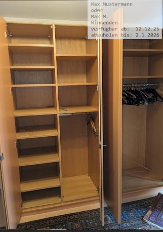
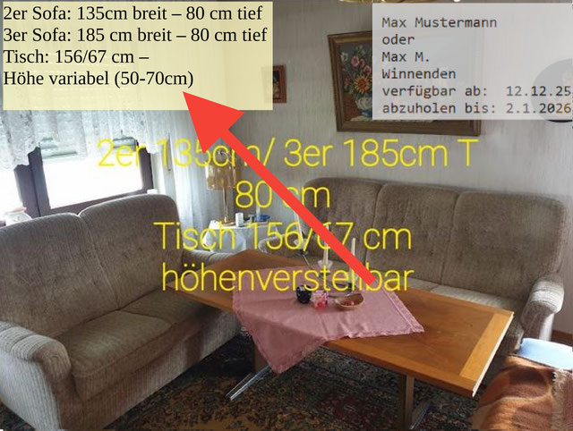
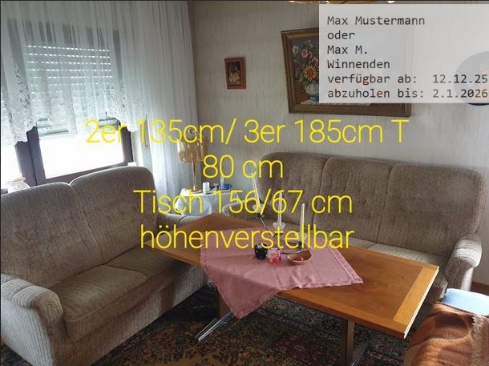

Virtuelles Warenhaus - Sachen clever spenden
Hier nun zu den Details....
Beispiel: Kleiderschrank

Die Maße sind direkt auf dem Bild angegeben.
Sehr gut! Sie könnten evt. noch etwas größer sein.
Man kann auch gut die Zahl der Türen sehen.
Rechts unten sehen sie ein kleines Infobild.
Es hilft uns sehr, später die Bilder zu zuordnen.
Es ist nicht notwendig, die komplette Adresse dort anzugeben. Auch der Name kann abgekürzt werden.
Wichtig sind die beiden Angaben, wie lange die Möbel voraussichtlich zur Verfügung stehen, bzw. ab wann und ab wann nicht mehr. Wenn das immer schon auf dem Bild zu sehen ist, erleichtert das unsere Arbeit enorm. Es hilft uns, die Bilder eindeutig zuzuordnen.
Dieses kleine „Info-Bild“ kann an jeder Stelle des Bildes sein. Es sollte natürlich möglichst wenig wichtige Stellen des Möbelstücks selbst verdecken.
Kleiderschrank mit geöffneten Türen

Das ist auch sehr gut, wenn zumindest ein Bild zeigt, wie der Kleiderschrank innen aussieht.
Das ist immer von großem Interesse und das ist ja auch verständlich.
Es ist hilfreich, wenn sich auch auf diesem Bild die Abmessungen befinden würde, falls die Zuordnung zum anderen Bild nicht mehr gegeben sein sollte.
Aber es ist keine große Katastrophe ;-)
Diesmal ist das kleine „Info-Bild“ rechts oben.
Die Position ist nicht so wichtig. Aber es hilft sehr viel, wenn es überhaupt zu sehen ist. Und zwar auf jedem Bild. Man kann das kleine „Info-Bild“ auch transparent gestalten. Allerdings sollte es noch zu lesen sein.
Beispiel: Esstisch, ausziehbar
Super Bild - mit Maßangaben

Auch das Maß des ausgezogenen Tisches ist mit angegeben. Top!
Manchmal ist es auch hilfreich, ein zweites Bild von dem Tisch in ausgezogenem Zustand mitzuschicken.
Rechts unten, das „Info-Bild“. Super plaziert, weil es nichts wesentliches verdeckt.
Beispiel: Sofa / Sofalandschaft

Ehrliche Detailaufnahmen von „Problemzonen“ sind wichtig!
Also, wenn das Sofa z.B. irgendwo einen Brandfleck hat oder abgewetzt ist - bitte NICHT verdecken, sondern ehrliche Bilder machen.
Sonst fahren wir die Sachen durch die Gegend und dann werden sie am Ende doch bald wieder irgendwie entsorgt.

Falls das Sofa eine Schlafstellung hat, dann - wenn möglich - immer auch im beiden Zuständen fotografieren und bemessen!
Sofatisch
Sofatisch - höhenverstellbar (guter Hinweis)
Der letzte Schliff...
Man sieht aber auf dem oberen Bild auch, dass die gelbe Schrift leider nicht immer gut zu lesen ist. Das liegt an dem unterschiedlichen Hintergrund.
In einem solchen Fall ist es besser, auch die Maße und Beschreibungen in einem extra Kasten anzugeben.
Dateinamen und Email-Anhänge
Wenn sie uns die Bilder über Email schicken, dann bitte als eigene Dateien als Anhänge.
Nicht im Text in die Email integriert.
Das macht uns dann leider viel mehr unnötige Arbeit.
Die Bilder bitte NICHT als pdf-Datei oder ähnliches, sondern am besten als jpg-Datei schicken.
Es ist auch noch sehr hilfreich, die Dateinamen entsprechend zu benennen, z.B.
Kleiderschrank-5-Türen-01.jpg
Wenn sie mehrere Bilder vom gleichen Möbelstück oder Gegenstand haben, dann bitte entsprechend durchnummerieren:
Kleiderschrank-5-Türen-02.jpg; Kleiderschrank-5-Türen-03.jpg
Bei mehreren verschiedenen Möbeln des gleichen Typs die Datei am besten so im Namen unterscheiden:
Kleiderschrank-A-3-Türen-01.jpg
Kleiderschrank-B-5-Türen-01.jpg
Kleiderschrank-C-5-Türen-01.jpg
Sachen, die eigentlich dauernd gebraucht werden...
Für folgende Sachen gibt es eigentlich fast immer Bedarf:
KÜCHE etc.
- Mikrowelle
- Wasserkocher
- Kühlschrank
- Gefrierschrank / Gefriertruhe
- Schnellkochtopf
- Große Kochtöpfe
- Toaster
- Kaffee-Maschine
- Standmixer (engl. Blender)
HAUSHALT, allgemein
- Waschmaschine / Waschtrockner
- Bügelbrett / Bügeleisen
- Kinderwägen (alle Größen)
- Staubsauger
- große Koffer, mit 4 Räder oder auch 2 Räder....
- Haar-Fön
- Teppiche
- Schuhschränke
- Spiegel
- Trolley zum Einkaufen (diese Einkaufstaschen mit Rädern)
ELEKTRONISCHES, WERKZEUG, ETC.
- TV-Geräte = Fernseher
- Handy / Smartphone
- Computer (Laptop, Notebook)
- Werkzeuge aller Art
- Nähmaschine, auch alte, mechanische, mit Tretwippe unten
- Klappräder, auch ältere Modelle
Noch ein abschliessendes wichtiges Anliegen....
Manchmal - wenn Möbel abgegeben werden - steht vielleicht auch Wohnraum zur Verfügung. Möglicherweise sind sie ja gerade auf der Suche nach verantwortungsbewußten Mietern?
Unter Umständen auch nur zur Überbrückung? Dann könnte für Sie diese Webseite interessant sein:
Die Webseite heißt „ Zusammenfinden “ und dort versuchen wir Wohnraum zu vermitteln. Am besten einfach mal vorbeiklicken.
Die Adresse der Webseite heißt ausgeschrieben: https://zusammenfinden.webnode.page/hintergrunde/
Hurra - jetzt sind wir endlich soweit: Schick nun einfach dein Spendenangebot per Mail an unser „virtuelles Warenhaus“ ab.
Drücke dazu auf folgenden großen, blauen Knopf - dann sollte sich dein Email-Programm melden.
Falls das nicht klappen sollte, kannst du auch diese Email-Adresse „von Hand“ bedienen:
warenhaus-spenden-angebot@freundeleuwi.org
Vielen Dank für deine / ihre Mithilfe!
Bitte habe Verständnis, falls nicht alles ganz schnell und reibungslos klappt.
Wir alle arbeiten hier im Ehrenamt und oft sollte man an vielen Stellen gleichzeitig sein.
Aber wir versuchen – mit all unseren Schwächen und Unzulänglichkeiten – so gut es geht zu helfen.
Wer mitmachen möchte, ist herzlich willkommen.
*Datenschutz: Deine Adresse wird nicht im Internet öffentlich sichtbar sein. Wir benötigen die Adresse aber zur Kontaktaufnahme. Daher wird die Adresse auch im Computer gespeichert. Mit der Angabe deiner Adresse stimmst du dieser Vorgehensweise zu.